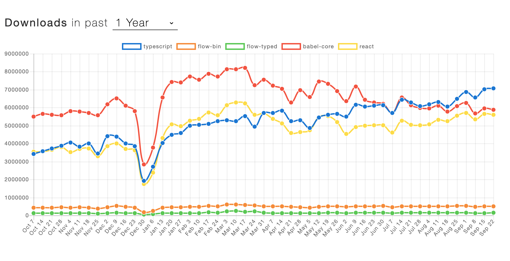

@chrismarx
http://bit.ly/typepres
Typescript == Javascript
With Super Powers
Super Powers from 2005
...still Joss Whedon ;)
#TBT 1. Typescript
Obligatory SO trends and NPM downloads

Typescript Is:
- A superset of Javascript
- A type checker
-
-
Typescript Is:
- A superset of Javascript
- A type checker
- A transpiler
Typescript Is:
- A superset of Javascript
- A type checker
- A transpiler
Ludicrous Speed Now!
- Autocompletion
- Refactoring
- Type hints, Jump to Definition
- Easy Access Documentation
- Quick Fixes (auto imports, etc)
- Less Tests!
lbf !== N
You gotta
find the fun
fear of a name only increases
typescript
fear of the thing itself
When things fail
Questions
@chrismarx
http://bit.ly/typepres